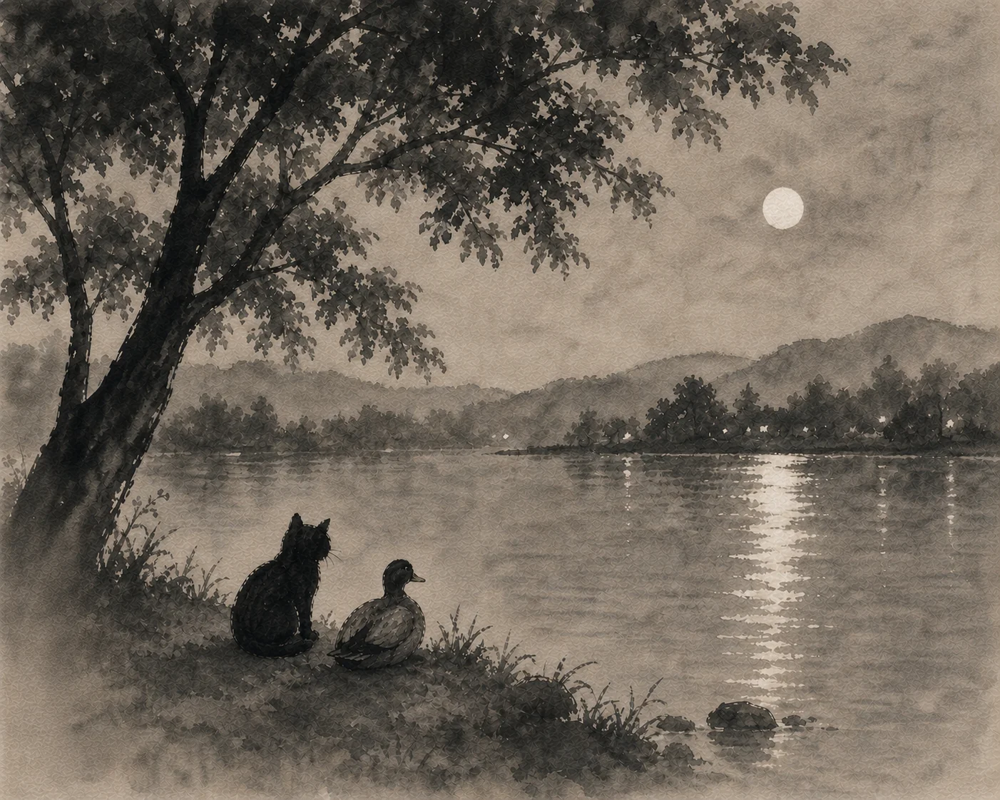
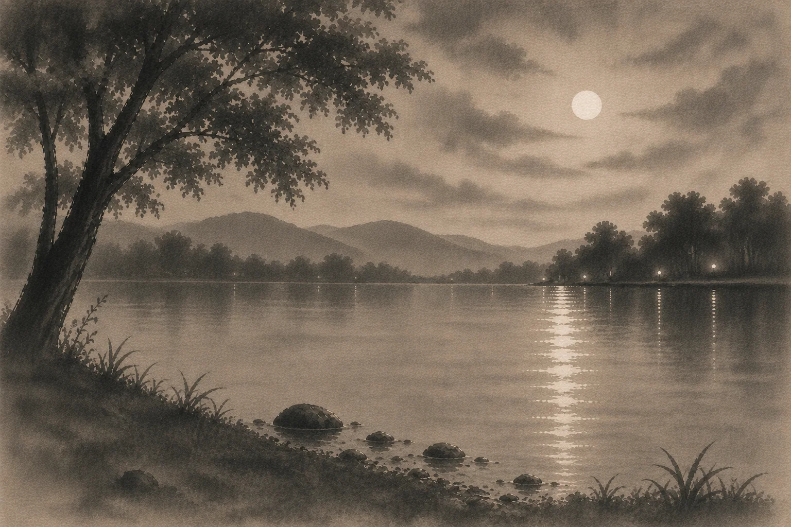
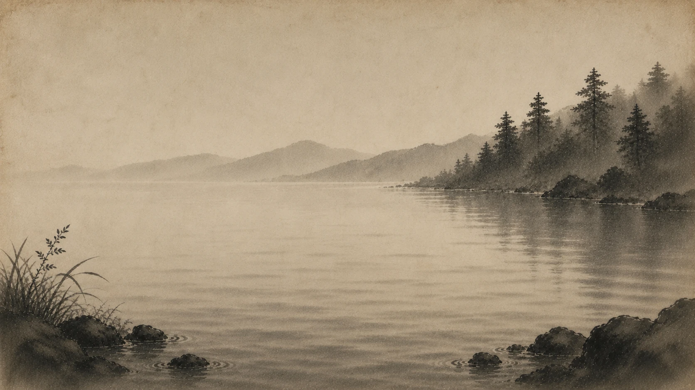
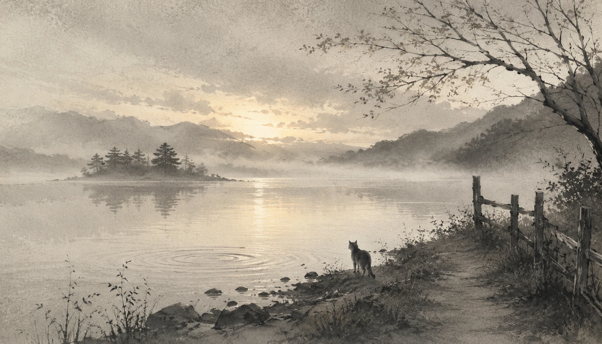

Whose Plan?
Suffering, and what remains when explanation falls away.
Foreword
A few words before the inquiry begins.
Over many years, in uneven and often difficult stretches, notebooks filled with questions about suffering, fear, thought, identity, and the strange ways the mind can trap itself.
They were never intended to become philosophy or a book.
They emerged from struggle, the same way many human beings begin seriously questioning suffering, meaning, fear, mortality, and the difficulty of being conscious and alive.
Since a first real existential collapse in college, the same underlying question kept returning: how much of suffering belongs to life itself, and how much is created or amplified by the mind?
The notebooks became part survival mechanism, part inquiry, part emotional processing. They filled with observations, fears, contradictions, philosophical questions, spiritual searching, and attempts to understand why the mind can become both a source of insight and a source of suffering.
They were never clean or systematic. They were messy, recursive, emotional, searching.
These questions were never approached from outside the human condition.
Only from inside it, trying to understand how to live a little more honestly and a little less fearfully.
Then, recently, someone very dear asked a question that touched the same deep inquiry these notebooks had been circling around for years.
Love inspires this attempt to answer.
At first it was only meant to become a short essay. Maybe a page or two.
But once the writing began, it became clear the question opened into something much larger.
The process remains very organic. There is no rigid outline or attempt to force predetermined conclusions. Each return to the manuscript begins by rereading what came before and trying to pick up the thread again.
The inquiry unfolds gradually. One layer reveals another. Certain themes keep returning from different angles: suffering, fear, identity, continuity, thought, uncertainty, and the search for stability.
This probably is not the kind of work that should be rushed through in search of conclusions.
Some passages may resonate immediately while others may only make sense later, after life has supplied the necessary context.
There is no final pot of gold hidden in these pages.
If any value emerges from the inquiry, it can only come through the reader’s own observation and lived experience.
KT
Acknowledgments
This work was shaped by many influences accumulated over a lifetime of reading, conversation, observation, struggle, and reflection.
Some of the questions explored here were influenced indirectly by contemplative traditions, existential philosophy, psychology, neuroscience, and the writings and dialogues of thinkers encountered over many years.
Certain themes may feel familiar to readers who have spent time with Buddhist thought, Zen writing, contemplative inquiry, or philosophers and teachers who explored suffering, identity, fear, thought, awareness, and the human condition.
But this is not intended as a system, doctrine, or authoritative teaching.
It is simply one human being trying to look carefully at the movement of thought, suffering, fear, attachment, identity, and relationship through the lens of lived experience.
Many of the emotional questions explored here were shaped not only by books, but by ordinary life itself: loss, fear, uncertainty, love, conversation, loneliness, friendship, curiosity, and the ongoing difficulty of being conscious and alive.
The author is deeply grateful to the many writers, thinkers, friends, family members, teachers, and fellow travelers whose ideas, conversations, kindness, and honesty quietly helped shape the inquiry over the years.
Special gratitude is owed to the person whose sincere question inspired this attempt to answer.
You know who you are.
I love you.
Chapter 1 — The Question
Suffering and the failure of explanation.

They sat by the edge of a lake, beneath the wide canopy of an old tree. The water moved gently, catching the last of the light. Kitty kept her tail wrapped tight around her paws. She had been quiet for a while, working something over. Duck didn’t interrupt.
"I keep coming back to it," she said. "If there is a god... why does he allow innocent suffering? Why would a newborn be left to starve? And don’t tell me it’s part of some plan. That we’re not supposed to understand it."
She let out a breath and shook her head. "That never sat right with me. If we can’t understand, what are we really saying? That it’s justified, but we’re not allowed to question it? Or that we’re supposed to just accept it and move on?"
A ripple moved across the surface of the water, spreading outward before disappearing. Duck shifted slightly, then looked out across the lake.
"It doesn’t feel abstract," he said. "A mother who loses her young doesn’t need an explanation. The feeling is just there. It clings. When something is clearly undeserved, no explanation makes it okay."
Kitty nodded slowly. "So what are we supposed to do with that?"
Duck adjusted his footing on the ground. "The mind wants an answer. It wants fairness. It wants cause and effect to line up."
"Yeah," Kitty said, letting out a small, humorless breath. "It really does. But that’s not what we see."
"No," Duck said, glancing at the water again. "Innocent creatures suffer. So if there is a god... whatever is happening here doesn’t follow the moral structure we expect."
Kitty stared out across the lake. "I still feel like I’m missing something. Like there’s an answer I’m supposed to find."
Duck didn’t look at her. "The mind wants something it can hold onto. Something that lets it rest. But there may not be an answer that satisfies it."
Kitty’s ears tilted back slightly. "That’s... not a great answer."
"No," Duck said. "It isn’t."
They sat in silence for a while.
A light breeze moved through the branches above them. The surface of the lake shifted, then settled again.
Duck broke the silence. "Different creatures come up with different ways of looking at it."
Kitty didn’t move, but her ears tilted slightly toward him.
"Some see a god that knows everything, can do anything, and cares deeply about what happens," he said. "A god that sets the rules, watches how things unfold, and judges. Rewards some. Condemns others."
Kitty’s tail tightened slightly. "And suffering?"
"It’s explained as part of the plan," Duck said. "A test. A consequence. Or something beyond understanding. But it’s still allowed. Even when it doesn’t seem to fit the idea of care."
Kitty stared out across the water. "That’s the one I can’t reconcile."
"Yeah," Duck said quietly. "A god that could stop it, but doesn’t."
The wind picked up briefly, rustling the leaves above them.
"There are other views," Duck continued. "Some don’t see a god in control at all. More like something that leans on things. Nudges them. Tries to move everything toward something better, but can’t force it."
Kitty turned her head slightly. "So it wants things to go a certain way, but doesn’t have the power to make it happen?"
"Something like that," Duck said. "Suffering still happens. Not because it’s planned, but because the system doesn’t fully bend to that influence."
Kitty was quiet for a moment. "That feels... different. Less intentional."
"Less control," Duck said.
The lake had gone darker now, reflecting the sky.
"And then there are views where none of this is personal at all," he went on. "No intention. No preference. Just a kind of underlying reality everything comes out of."
Kitty’s ears lifted slightly. "No caring?"
"No caring. No not caring," Duck said. "It’s not a being in the way we think of it. More like the ground everything arises from."
Kitty let out a slow breath. "So suffering just... is."
Duck nodded. "Not chosen. Not judged. Not explained."
They sat with that for a moment.
Kitty looked down at her paws. "None of those really solve it."
"No," Duck said. "They just frame it differently."
She glanced back out at the lake. "One says it’s allowed. One says it can’t be stopped. One says there’s no one there to allow or stop anything."
Duck gave a small nod. "Yeah."
Another stretch of quiet settled in.
"And we’re still left with it," Kitty said.
"Yeah," Duck said.
The water moved again, barely visible now in the fading light.
Kitty spoke more quietly this time, as if testing the ground beneath the thought. "We don’t even know if any of those are right. If there is a god, we don’t know what it is, or what it wants, or if it even has wants. We make all these explanations, but we can’t actually verify any of them."
Duck remained still, looking out across the lake.
"They might all be wrong," Kitty went on. "Or partly right. But there’s no way to check. So we keep asking why... but we’re asking something we can’t really answer."
A breeze moved through the branches above them, and the surface of the lake shifted, then settled again.
Duck gave a small nod. "And the more we build around that question, the more we lean on something we can’t see or test. It pulls us away from what’s actually happening."
Kitty turned that over. "So we push the responsibility somewhere else."
"Yeah," Duck said. "Onto something we can’t question. And while we’re doing that, the suffering is still here."
The words hung there for a moment.
"It doesn’t go away because we explain it," he continued. "Or justify it. Or call it part of something bigger. It’s still there, whether we can make sense of it or not."
Kitty’s tail loosened slightly as she watched the darkening water, her reflection fading with the light.
"So maybe that’s not the right question," she said after a while. "If we can’t know whether there’s a god, or what its nature is, then building everything around that doesn’t really help. It just keeps us circling."
Duck shifted slightly. "Then the question changes."
Kitty nodded slowly. "Yeah. Not whose plan it is. Not why it’s allowed."
She paused, then said it more clearly.
"What do we do with suffering?"
The lake had gone almost still now, the surface flattening into a dark, quiet sheet.
"We can’t control most of what happens," Duck said. "But we can see what we add to it. The thoughts, the stories, the resistance... the way we turn one moment into something bigger than it is."
Kitty let out a slow breath. "Stacking it."
"Yeah."
They sat with that for a while.
"So instead of trying to solve something we can’t know," Kitty said, "we work with what we can see. What’s actually here."
Duck nodded once.
"And that doesn’t mean ignoring it," she added. "Or pretending it’s okay."
"No," Duck said. "It means meeting it without adding more than is already there."
The last light slipped off the surface of the lake, leaving only a faint line where water met shore.
After a long pause, Kitty asked, "What about when it’s someone else suffering?"
Duck took his time before answering. "You don’t hand it off to a story. You don’t try to fix it or explain it away. You stay with them. You don't take it over. Just be there."
Kitty nodded quietly.
The air had cooled, and the tree above them had gone still.
After a while she said, "Maybe that’s it. Not whose plan it is."
Duck didn’t move.
"But how we meet what happens."
A long silence followed, the kind that didn’t feel empty.
Then Duck, still looking out across the lake, said softly, "Yeah."
Chapter 2 — The Next Day
The movement of thought
The next morning, Kitty woke with a lightness she hadn’t felt in a while.
The question had settled the night before. Not answered, exactly, but set down. For a time, that had been enough.
She moved through her morning the way she usually did. The same routines, the same small patterns. But something in her felt quieter. Less urgent.
By midday, that quiet had begun to thin.
It wasn’t anything dramatic. Just small things — a tone in someone’s voice, a moment that didn’t land right, a flicker of irritation that came and went.
And underneath it, something familiar.
The sense that what they had said the night before — while true in its own way — hadn’t changed what she was meeting now.
The suffering was still there. Not as a question, but as a fact.
She noticed the mind begin to move again.
Trying to make sense of what was happening. Trying to smooth it out. To bring it back into something that could be held.
She didn’t follow it too far, but she saw it.
By the time the day began to wind down, she already knew where she would go.
The light was fading again by the time she reached the lake.
Duck was already there, standing near the edge of the water. The surface was calmer tonight, barely moving.
Kitty came up beside him and sat down without saying anything.
For a while, they just watched the lake.
“I kept thinking about what we said,” Kitty said finally.
Duck gave a small nod. “Yeah.”
“It helped. Last night, it really did. I felt... settled. Like I could just leave the question alone.”
Duck didn’t respond.
Kitty watched the water for a moment before continuing.
“But today it didn’t hold.”
Duck glanced at her, then back at the lake.
“It’s not the same kind of question now,” she said. “Yesterday it was all about suffering and whether there was something behind it. Whether any of this was being guided.”
She hesitated.
“But once those explanations start to loosen... the mind doesn’t just stop.”
Duck remained still, listening.
“It keeps trying to make something out of what’s happening,” she said. “To fit it into something that makes sense. Something stable.”
She looked down at her paws for a moment.
“Because without that...” she said quietly, “everything starts to feel exposed.”
Duck nodded once.
“The mind want's something it can hold onto.”
Kitty glanced at him.
“Yeah. Exactly.”
They sat with that for a moment.
“It doesn’t seem like much,” she said. “But it’s constant.”
Duck looked out across the lake.
“Yeah,” he said quietly. “That’s where it starts.”
Duck was quiet for a while after that.
The lake barely moved now. Just the occasional ripple spreading out through the dark water.
“It makes sense, you know,” he said eventually. “That need for something stable. Something to hold onto. The brain is built to look for security.”
Kitty looked over at him but didn’t interrupt.
“When we’re in the womb, there’s no separation yet. Everything we need is just there. Warmth, food, protection. There’s no effort to it. No sense yet of being a separate thing trying to survive in a world.”
The leaves above them shifted softly in the wind.
“But then suddenly we’re exposed to all of this,” Duck continued, gesturing lightly outward. “Light. Sound. Cold. Hunger. Fear. Other creatures. Uncertainty.”
Kitty’s ears tilted slightly forward as she listened.
“And the brain has to adapt. It has to build some kind of working model of what all this is in order to survive. What helps. What hurts. What’s safe. What isn’t.”
He paused for a moment, watching the water.
“And over time part of that model becomes ‘me.’ A name. A history. Preferences. Fears. Roles. Memories. Ways of seeing yourself. The brain organizes experience into something more stable. Something continuous.”
Kitty looked down at the ground between her paws.
“Which makes sense,” she said quietly.
“Yeah,” Duck replied. “It does. The models themselves aren’t really the problem. Without them we probably couldn’t function in this world at all.”
The water touched lightly against the shore.
“After a while, though,” he continued, “the model stops feeling like a model. It just feels like reality. Like that’s actually who we are.”
They sat quietly for a moment.
“And then when something threatens the model,” Kitty said slowly, “it feels like it’s threatening me.”
Duck nodded once.
“Yeah. Even if what’s being protected is mostly psychological.”
The night had grown cooler around them. Kitty remained still beside the water, watching the faint movement of reflected light across the lake.
Duck was quiet for a while before speaking again.
“Do we agree on something now?” he asked softly.
Kitty glanced toward him. “Maybe.”
A small smile touched Duck’s face.
“I mean this,” he said. “It seems like a lot of the fear and suffering we experience comes from two things mixing together. What actually happens, and then everything the mind builds around it.”
The leaves overhead shifted gently in the evening air.
“The event itself might be real enough,” he continued. “Pain. Loss. Embarrassment. Rejection. Fear. But then the psychological mind grabs hold of it.”
Kitty lowered her eyes slightly.
“It starts building,” Duck said quietly. “Stories. Projections. Defenses. Identity. Future scenarios. Regret. Blame.”
He looked out across the dark water.
“And after a while it becomes hard to tell what part is the actual event... and what part is everything we’ve piled onto it.”
Kitty was silent for a moment.
“Yeah,” she said softly. “It spreads.”
Duck nodded once.
“Like a small cut becoming infected.”
The water lapped softly against the shore.
“So maybe,” Duck said, “between now and the next time we meet, we try something.”
Kitty looked over at him again.
“Just observe,” he said. “As honestly as we can. Watch what happens during the day. Watch the moments when something simple gets hijacked by the psychological mind."
He added, "Don't try to fix it. Just look."
Kitty’s ears tilted forward slightly.
“Notice when the mind starts defending an image. Or replaying something. Or projecting into the future. Or turning discomfort into identity.”
Duck paused briefly.
“And maybe ask: what is actually happening right now... and what is being filtered through the model?”
The question settled quietly between them.
Kitty looked back out at the lake.
“And what if the model starts to fall away?” she asked.
Duck took his time answering.
“Maybe nothing terrible happens.”
Kitty gave a faint, uncertain smile.
Duck continued gently.
“Maybe we can look without immediately turning everything into ‘me’ and ‘my problem’ and ‘my story.’ Maybe there’s a way to just see things for a moment before the machinery starts.”
The branches above them had gone nearly still now.
Kitty let out a slow breath.
“And if we can’t?”
Duck looked over at her fully this time.
“Then we notice that too.”
The tension in Kitty’s shoulders loosened slightly.
“No grading?” she asked quietly.
Duck smiled.
“No grading.”
A long silence followed, but it no longer felt heavy. The lake stretched out before them — dark, open, unconcerned.
After a while Duck spoke again, his voice calm and steady.
“You don’t have to force the mind to disappear, Kitty. You’ve spent your whole life surviving with it. Of course it keeps trying to protect you.”
Kitty’s eyes lowered slightly.
Duck’s voice softened.
“We’re not trying to destroy it. We’re just learning to see it clearly.”
The breeze moved lightly across the water one last time.
“And maybe,” Duck said quietly, “when it realizes it doesn’t have to carry the whole world by itself... it relaxes a little.”
They sat together beside the lake until the last traces of light disappeared into the evening sky.
Chapter 3 — The Running
Habit, momentum, and the difficulty of seeing clearly.
As Kitty stepped out into the cool morning air the next day, she paused for a moment before starting down the path. The world felt unusually clear. Damp earth. Wind moving softly through the trees. Distant sounds drifting in and out. For a few seconds, there was just that.
Then thought returned.
Not dramatically. Quietly. Automatically. Something she needed to do later. Something someone had said yesterday. A small irritation. An imagined conversation. A worry about how something might unfold. By the time she noticed it happening, she had already been lost in it for several minutes.
Kitty slowed slightly.
“Oh,” she murmured to herself.
The thoughts loosened for a moment. The morning returned — the sound of leaves overhead, the rhythm of her paws against the path, the coolness of the air moving across her fur. Then, almost immediately, the mind moved again.
The rest of the morning passed like that. Brief moments of seeing followed by long stretches of immersion. Sometimes she would suddenly realize she had been mentally rehearsing something for so long that she no longer remembered when it had begun. Other times she noticed the body reacting before thought explained anything at all — a tightening in her shoulders, irritation already forming, a vague pressure in her chest searching for a story to attach itself to.
And almost instantly, the mind supplied one.
It was strangely fast once she started noticing it. Not just thought itself, but the speed at which everything became interpretation.
Near midday, Kitty stopped beside a narrow wooden fence that ran along the edge of a field. She stood there absentmindedly for a moment, watching sunlight move between the slats.
Then something about it struck her.
When she was moving quickly, the fence became a blur. The spaces vanished. Everything fused together into motion. But standing still, she could see through it.
The thought lingered.
A strange feeling moved through her then. Not exactly fear. More like recognition. The mind was always moving. Even now, while standing still physically, something inside continued running — reaching, labeling, revisiting, anticipating. It rarely stopped long enough to simply look.
And when it did stop, even briefly, something unfamiliar appeared.
Not an answer.
Just space.
The feeling unsettled her more than she expected.
She resumed walking, a little faster this time, and almost immediately the mental movement returned in full. Plans. Memories. Small fantasies. Fragments of old conversations. Rehearsals for things that might never happen. Part of her felt relieved by it.
That was what disturbed her most.
The running was exhausting, but stopping felt exposed.
Later that afternoon, Kitty caught herself returning again and again to a thought that had been bothering her for weeks. She had already turned it over countless times. Nothing new came from it anymore. Each pass through it produced the same dull discomfort.
And still the mind returned to it.
Again.
Again.
As though repetition itself offered something.
Kitty slowed her pace. Why keep touching something painful?
A breeze moved softly through the grass around her as the question stayed with her. After a while, another possibility emerged quietly beneath it.
Maybe the mind preferred familiar discomfort to uncertainty.
The thought landed heavily. She saw suddenly how strange it was that creatures could cling to things that harmed them simply because those things had become known — known paths, known fears, known identities. The mind seemed to trust what it recognized, even when recognition carried pain with it.
By evening, Kitty felt tired in a different way than usual. Not physically. It was the effort of trying to watch. Or maybe the realization of how rarely she actually had.
Most of the day had unfolded automatically. Thought leading to thought. Reaction leading to reaction. Habit moving beneath nearly everything. And yet, here and there, small openings had appeared. Moments where the machinery became visible.
Only briefly.
But enough.
The sun had already begun sinking by the time she started toward the lake again. As she walked, the familiar pull of thought continued moving through her mind.
But now something else moved with it.
Observation.
Quiet.
Coming and going.
Incomplete.
But present.
Chapter 4 — What The Mind Protects
Observation, impulse, and the difficulty of seeing ourselves clearly.

The lake was already dark by the time Kitty arrived.
Duck glanced toward her as she approached, then looked back out across the water.
“You look tired,” he said quietly.
Kitty let out a small breath through her nose as she settled beside him.
“I think I spent most of the day watching myself fail at watching.”
A faint smile crossed Duck’s face.
“Yeah,” he said. “That’s usually how it goes.”
They sat quietly for a while. The water moved in slow, uneven ripples beneath the moonlight.
Kitty stared out across the lake.
“It was strange,” she said eventually. “I’d remember to look for a few seconds, maybe a minute if I was lucky. Then I’d disappear back into thought again before I even realized it.”
Duck nodded.
“The mind moves fast.”
“Too fast,” Kitty said. “It’s like it’s always trying to get somewhere.”
Duck was quiet for a moment before answering.
“Maybe it thinks it has to.”
Kitty turned that over.
“The strange part,” she said slowly, “is that when things briefly got quiet... it felt uncomfortable.”
Duck glanced toward her.
“How so?”
Kitty searched for the words.
“I don’t know exactly. Exposed, maybe. Like something in me wanted to immediately fill the space again.”
The branches above them shifted softly in the wind.
“With thought?” Duck asked.
“Yeah. Planning. Remembering. Replaying things. Anything.” She hesitated. “The running felt exhausting, but stopping somehow felt worse.”
Duck nodded slowly.
“The organism learns very early that uncertainty can be dangerous,” he said. “So the mind keeps moving. Predicting. Comparing. Preparing. Trying to stay ahead of what might happen.”
Kitty listened quietly.
“That’s not really a flaw,” Duck continued. “Most of it exists because it helped creatures survive. Memory helps us avoid danger. Anticipation helps us prepare. Even emotional reactions have purposes.”
He looked out across the water.
“The mind is trying to protect the organism.”
Kitty lowered her eyes slightly.
“Then why does it create so much suffering?”
Duck took his time answering.
“Maybe because the machinery doesn’t always know the difference between actual danger and psychological danger anymore.”
The words settled heavily between them.
Kitty thought about the day. The constant rehearsing. The imagined conversations. The small waves of anxiety that kept appearing for no clear reason.
“It’s strange,” she said quietly. “Sometimes it felt like my body reacted before I even understood what I was reacting to.”
Duck nodded once.
“A lot happens beneath conscious thought,” he said. “The organism is always reading the environment. Memory gets stored deeply. Not just as ideas. In the nervous system too.”
Kitty’s ears tilted slightly toward him.
“So when something reminds the organism of danger,” Duck continued, “the reaction can begin before the conscious mind finishes building the story.”
He looked out across the water for a moment.
“The mind is always scanning,” he said quietly. “Looking for patterns. Markers. Signs of risk. Sometimes the environment is actually dangerous. Other times something just stirs memory — embarrassment, fear, old pain, moments the organism thinks it handled badly.”
The lake shifted softly beneath the moonlight.
“So the machinery keeps moving,” Duck continued. “Replaying the past. Predicting the future. Trying to stay ahead of what might happen. A lot of that movement happens beneath conscious awareness, and sometimes action begins before the conscious mind even understands why.”
Kitty’s ears tilted slightly forward.
“And then thought rushes in afterward,” Duck said, “trying to turn the movement into a story about conscious choice.”
Kitty was quiet for a moment.
“That actually explains a lot.”
Duck gave a small nod.
“Thought usually arrives a little later and says, ‘Here’s why I feel this way.’ But often the movement has already started.”
Kitty stared down at the ground between her paws.
“There were other things too,” she admitted quietly.
Duck waited.
Kitty hesitated.
“Things I didn’t really like seeing.”
The breeze moved softly across the lake.
“Like what?”
Kitty let out a small breath.
“I caught myself feeling territorial today. Another cat walked near my usual spot and I immediately felt irritated. Possessive.” She shook her head slightly. “And later I found myself staring at someone else’s food, actually thinking about taking it.”
Duck didn’t react.
“That’s not even the worst part,” Kitty continued. “The disturbing part was how automatic it felt. The impulse was just there before I had any opinion about it.”
Duck remained quiet for a moment.
“Did seeing it make you uncomfortable?”
Kitty gave a dry laugh.
“Yeah. I like thinking I’m better than that.”
Duck nodded gently.
“Most creatures do.”
Kitty stared out across the lake again. The water had gone nearly black now, broken only by thin lines of reflected moonlight.
“I don’t know how deep this goes,” she admitted quietly.
Duck followed her gaze out across the water. “You don’t have to know yet.”
Part of Kitty still felt unsettled by what she had seen that day. Not just the impulses themselves, but the realization that so much seemed to happen before she was even consciously aware of it. The machinery felt older than the version of herself she usually carried around in thought.
“And what if I don’t like what I find?” she asked softly.
Duck was quiet for a while before answering.
“Then you notice that too,” he said. “Creatures are usually too quick to interfere. We see something uncomfortable and immediately try to suppress it, justify it, fix it, or turn it into a moral problem. But if you stay with it quietly for a little while, sometimes the movement starts revealing itself on its own.”
Kitty lowered her eyes slightly. “So I just keep looking?”
Duck nodded once. “As gently and honestly as you can. You don’t have to force anything, and you don’t have to rush. Some of these patterns have been building for a very long time.”
The lake stretched quietly before them.
“Just keep dipping your toe in the water,” Duck continued. “A little at a time.”
Kitty glanced toward him. “And if I get lost in it again?”
Duck gave a small shrug. “Then maybe later you notice that you got lost.”
Kitty laughed softly despite herself. “That still counts?”
“It all counts.”
They sat quietly together beside the lake as the night settled fully around them.
After a while Duck spoke again, his voice calm and steady.
“You don’t have to figure it all out alone, Kitty. I’ll be here. We can unpack it together.”
The tension in Kitty’s shoulders loosened slightly.
For the first time that evening, the silence no longer felt heavy.
Chapter 5 — Familiar Ground
Stability, identity, and the fear of uncertainty.
The next morning, Kitty woke before sunrise.
For a few moments she remained still, listening to the faint sounds around her. Wind moving softly through distant branches. Water dripping somewhere nearby. The slow shifting creaks of the place she had slept for years.
Then the thought appeared.
Years.
The feeling stayed with her as she stepped out into the cool morning air.
At first the day unfolded the way it always did. The same paths. The same routines. The same familiar places where she searched for food or paused to rest.
But now something else moved alongside the routine.
Observation. Not constantly. Not clearly. But enough.
As she moved through the morning, she began noticing how much of her behavior revolved around maintaining continuity.
Not just physical continuity, but psychological continuity too. The version of herself other creatures expected. The version she expected.
The familiar reactions. Familiar conversations. Familiar emotional rhythms. Even familiar frustrations. It all fit together into something predictable.
A narrative.
At one point she caught herself preparing for an interaction before it had even happened.
Not consciously at first. The body tightened slightly. Certain responses were already lining themselves up internally. Defensive explanations. A particular tone of voice. An image she wanted to maintain.
Then awareness arrived a moment later and saw the machinery already moving.
Kitty slowed her pace.
It was strange how often the mind seemed less interested in reality itself than in preserving a stable version of things, especially a stable version of herself.
Later that afternoon she wandered near an old storage shed where she sometimes slept.
The place was familiar. Dry enough most nights. Relatively safe. Close to the usual food routes.
But she had known for a while there was probably a better place farther uphill beneath a cluster of thick trees and stone. Quieter. Warmer. Safer during storms.
She had already inspected it several times.
And still she had not moved.
Kitty stood quietly beside the shed, staring at the weathered boards.
The strange part was that she already knew many of the problems with this place. The cold drafts at night. The dampness after rain. The occasional larger animals that passed nearby.
None of it was ideal.
But it was known.
The other place remained uncertain, and somehow uncertainty still felt more dangerous than familiar discomfort.
The realization unsettled her.
She began noticing the same pattern elsewhere. The places she searched for food. The routes she walked. The creatures she avoided. Even the thoughts she returned to over and over again.
The mind seemed to prefer familiar suffering to uncertain change. Not because suffering was pleasant, but because familiarity felt safer.
As the day continued, another layer slowly began revealing itself.
It wasn’t just the present the organism seemed concerned with. Something in her was already orienting toward the future.
Not through clear conscious planning exactly. More like quiet pressure beneath thought. A pull toward territory, stability, and someday raising a family.
Kitty rarely thought about those things directly. Whenever the thoughts appeared, part of her quickly moved away from them.
That belonged to another stage of life. A different version of herself. And with it would come change.
She sat beneath a low fence later that evening, watching the fading light pass through the slats.
The memory returned immediately.
When she was moving quickly, the spaces disappeared. When she became still enough, she could see through them.
Kitty lowered her eyes.
The problem now was that she couldn’t entirely stop seeing. Something had shifted. The old unconsciousness no longer fit the same way.
And that frightened her more than she wanted to admit.
Part of her worried that if she looked too closely, everything might begin falling apart. The routines. The identity. The familiar structures of her life.
There was no guarantee that what replaced them would feel safer.
Maybe the opposite.
The wind moved softly through the grass around her.
Kitty looked out across the darkening field and suddenly understood why creatures spent so much time running mentally.
The movement itself created a kind of shelter. As long as the machinery kept moving, there was less space to notice how uncertain everything really was.
But now the spaces had begun appearing on their own. Quietly. Uninvited.
And once seen, they could not be entirely unseen.
By the time evening arrived, Kitty already knew where she wanted to go.
Not because Duck had answers.
But because something in her needed the quiet honesty of those conversations beside the lake. A place where she didn’t have to pretend the machinery wasn’t there.
As she began walking, she noticed the mind immediately trying to turn everything into a goal again.
Fix this. Resolve that. Get somewhere.
But another part of her sensed that forcing herself toward some imagined conclusion would only become another form of running.
She didn’t know what came next.
Only that something had already begun moving long before she consciously understood it, and now somehow she was being carried along with it.
Chapter 6 — Beneath the Surface
The unconscious, survival, and learning to observe without condemnation.

Kitty arrived at the lake.
The evening was quiet and cool. A thin band of orange light stretched across the water as the sun settled behind the trees. Dragonflies skimmed the reeds near the shore, and somewhere in the distance leaves rustled softly in the wind.
She lowered herself into the grass near the edge of the lake and watched the water move gently against the rocks.
After a few minutes Duck arrived and quietly sat down beside her.
For a while they simply watched the lake together.
Over the last few days Kitty had begun noticing something unsettling about herself.
Certain emotions and impulses seemed to appear before she consciously chose them. Fear. Jealousy. Territorial feelings. The desire for approval. Even moments of resentment or superiority. They would emerge suddenly, almost automatically, and only afterward would her thoughts rush in to explain or justify them.
The realization had been bothering her deeply.
Kitty stared out across the water as she tried to untangle it in her mind.
It was not just that she sometimes had selfish or fearful impulses. What disturbed her was how quickly the mind constructed stories around them. Explanations. Rationalizations. Moral framing.
Sometimes she could almost watch it happening in real time.
An impulse would arise first.
Then thought would arrive afterward and begin narrating.
Finally Kitty spoke.
“I think I’ve started noticing something I can’t un-see.”
Duck glanced toward her.
“It feels like some of my thoughts and actions come from somewhere deeper than conscious choice. I’ll suddenly feel anger, fear, jealousy, or this need for approval from other cats, and before I even understand what’s happening the feeling is already there.”
She paused.
“And then my mind starts building stories around it. Explanations. Justifications. Sometimes it even wraps those impulses in moral language.”
Duck nodded gently.
“The feeling comes first. Thought arrives afterward and begins explaining.”
Kitty looked over at him, relieved.
“Yes. Exactly.”
The wind blew gentle ripples across the lake surface.
“I always assumed most of my thoughts were consciously chosen,” she observed. “But lately I’ve started seeing how much seems driven by something underneath all that. Something operating before I even become aware of it.”
Her voice lowered.
“And honestly… it scares me.”
Duck remained quiet for a moment before answering.
“You are beginning to notice parts of the mind that usually remain hidden. The conscious mind often arrives late and starts narrating events that were already unfolding underneath it.”
Kitty sat with that carefully.
“You mean the unconscious?”
“That’s one way to describe it.”
A bird called somewhere deep in the trees.
Kitty wrapped her tail loosely around herself as she thought.
“If there are hidden parts of me operating all the time,” she said slowly, “then what else is down there? What if some of it is bad?”
Duck’s expression softened.
“The unconscious is not necessarily some dark evil place, Kitty. Much of it is simply ancient survival machinery.”
She listened closely.
“The brain is a tool shaped over a very long time by the pressures of survival,” Duck said quietly. “Its primary task is to help the organism stay safe, avoid danger, seek comfort, and continue living."
Kitty shifted a bit. Duck continued.
"A great many thoughts and impulses emerge from those deeper biological pressures long before conscious thought organizes them into a story. Territorial feelings. Jealousy. The need for approval. Even the desire for control. Much of it is survival machinery reacting automatically to uncertainty.”
Kitty lowered her eyes slightly.
“So when another cat enters my territory,” she said slowly, “something underneath reacts before I consciously choose anything.”
Duck nodded gently.
“Because control can create the feeling of safety,” he said. “The organism tries to stabilize its environment. And when that stability feels threatened, the deeper machinery reacts automatically.”
The water shifted softly against the rocks.
“So even a lot of darker impulses,” Kitty said quietly, “may really be fear trying to regain control.”
Duck was quiet for a moment before continuing.
“A lot of comparison seems rooted in the same survival machinery,” he said. “Creatures constantly measure themselves against one another. Strength. Status. Territory. Approval. Access to comfort and security.”
Kitty listened silently.
“In earlier environments,” Duck continued, “falling behind the group could carry real consequences. Exclusion, loss of protection, fewer opportunities to survive or reproduce. So the organism became highly sensitive to where it stood relative to others.”
The water shifted softly against the rocks.
“And even now,” he said quietly, “the psychological mind keeps extending that comparison endlessly. More success. More attention. More control. More experiences. A great deal of fear of missing out is really fear of being left behind.”
Kitty lowered her eyes thoughtfully.
“So the mind keeps chasing position.”
Duck nodded gently.
“In many cases, yes,” Duck said softly. “Which is very different from saying you are somehow broken or not good enough.”
Kitty stared back out at the lake.
The idea unsettled her, but it also carried an odd sense of relief.
Duck continued quietly.
“Sometimes those survival patterns become distorted. Fear can distort them. Pain can distort them. Conditioning can distort them. But distortion is not the same thing as evil.”
Kitty exhaled slowly, some of the tension leaving her shoulders.
“So when I notice possessiveness, dependency, jealousy, territorial feelings… I’m seeing those deeper structures at work?”
Duck nodded.
“You are beginning to observe the machinery underneath the stories the mind tells about itself.”
The evening wind moved softly through the reeds.
After a while Kitty asked, “How do I understand it better?”
“You don’t force the unconscious into the light,” Duck said. “It rarely reveals itself through interrogation or aggression.”
Kitty tilted her head slightly.
“You begin by watching carefully. Over time patterns start to emerge. Certain fears repeat themselves. Certain desires return again and again. Thought rushes to defend certain images of yourself. Emotional reactions shape the way you interpret the world.”
Kitty listened silently.
“The unconscious reveals itself indirectly,” Duck continued. “You begin to see it in the patterns of thought, behavior, attachment, fear, and reaction that appear throughout daily life.”
The lake had grown darker now. Small ripples spread across the surface as the evening wind moved over the water.
“So I shouldn’t immediately judge what I find?” Kitty asked.
Duck shook his head.
“If you move too quickly into judgment or self-condemnation, the mind becomes defensive. It starts hiding from itself again.”
Kitty lowered her eyes thoughtfully.
“Then what should I do?”
Duck looked out over the darkening lake before answering.
“Look carefully. Be patient. Let things reveal themselves in their own time.”
The silence that followed no longer felt heavy to Kitty. It felt spacious.
“If you continue watching without rushing to correct every impulse,” Duck said softly, “the deeper patterns of the mind gradually become easier to recognize. And when understanding deepens, behavior can begin to change naturally.”
Kitty was quiet for a while as she watched the ripples spreading softly across the lake.
“Not because I’m forcing myself to become a better cat?”
A faint smile crossed Duck’s face.
“No. Not because of dogma or self-punishment. But because intelligence slowly begins to see what actually supports life and what creates unnecessary suffering.”
The words settled quietly into Kitty as she watched the ripples spreading across the lake.
“The survival of any species,” Duck continued, “is probably strengthened far more by love, cooperation, and mutual care than by endless aggression and competition. Life tends to function better when creatures learn how to live together intelligently.”
Kitty noticed something surprising then.
For the first time since arriving, she did not feel trapped by what she had discovered about herself. The unconscious no longer seemed like some horrible darkness hiding beneath her thoughts. It felt more like a vast and ancient process she was only beginning to understand.
Not an enemy.
Just something to observe carefully.
After a while she stood and stretched.
The heaviness she had arrived with had not completely disappeared, but it had changed shape. What she felt now was curiosity. Engagement. A quiet sense that the inquiry itself was becoming meaningful.
Duck remained seated by the water.
“You’re doing fine, Kitty,” he said softly. “You do not need to solve everything at once.”
Kitty gave a small nod before starting the walk home.
As she moved along the path beside the lake, she noticed herself paying attention differently than before. She was no longer searching so desperately for immediate answers or trying to force herself into some perfected image.
She was simply watching.
That felt like real movement.
Chapter 7 — The Quiet
Stillness, distraction, and learning to remain present.
Over the next few days Kitty found herself returning to the lake more often.
Not because she thought Duck had answers waiting there.
And not because she believed sitting quietly beside water would somehow solve the machinery she had begun noticing inside herself.
She simply felt drawn there.
The lake had become one of the few places where she no longer felt the same pressure to maintain herself.
One evening she arrived before Duck.
The air was cool and still. The surface of the lake reflected the fading sky in long bands of gray and pale orange. Somewhere along the far shoreline insects hummed softly beneath the reeds.
Kitty settled beneath the old tree and watched the water quietly.
At first the stillness felt comforting.
The tension in her body loosened slightly. Her breathing slowed. The constant pressure she usually carried around inside herself seemed softer here.
Then gradually she began noticing something else.
The mind had not become quiet at all.
Thought continued moving almost immediately.
Small things at first.
What she might do tomorrow. A conversation from earlier that day. A moment she wished had gone differently. A vague fantasy about the future.
Then the movement deepened.
Imagined conversations. Rehearsed explanations. Tiny emotional arguments with creatures who were not even there.
At one point the mind suddenly latched onto the possibility that she might have forgotten something important earlier that day. Almost immediately it began generating consequences and rehearsing outcomes. What if something had gone wrong? What if she would have to deal with it later? Within seconds the body had already tightened around futures that did not even exist yet.
By the time she noticed she had drifted fully into thought again, several minutes had already passed.
Kitty exhaled softly through her nose.
“Oh.”
For a few moments the lake returned — water against the shore, wind moving softly through the leaves overhead, the coolness of evening settling into the grass.
Then the machinery started again.
Planning. Remembering. Predicting. Narrating.
The movement seemed endless once she began noticing it clearly.
What surprised her most was not the amount of thought.
It was the feeling that appeared whenever the movement briefly slowed.
Restlessness.
Almost immediately something in her wanted to reach for stimulation again. Another thought. Another memory. Another problem to solve.
Sitting quietly beneath the tree, Kitty slowly began realizing how difficult simple stillness actually was.
Not physically. Psychologically.
The realization disturbed her.
For most of her life she had assumed quietness meant peace.
But now she could feel how much movement was constantly operating underneath ordinary experience. Even when the body became still, something deeper kept running.
And when that movement slowed, uncertainty began appearing underneath it.
A strange sense of exposure.
The organism did not seem to like open space very much.
By the time Duck arrived, the last traces of sunlight had nearly disappeared behind the trees.
He settled beside her quietly.
For a while neither of them spoke.
Finally Kitty broke the silence.
“I think I’m starting to understand why creatures stay busy all the time.”
Duck glanced toward her gently.
“How so?”
Kitty looked out across the lake.
“When things get quiet externally, the internal movement becomes easier to notice.”
Duck nodded once.
“Yeah.”
Kitty lowered her eyes slightly.
“And honestly… it’s uncomfortable.”
The evening wind moved softly through the branches above them.
“I kept thinking sitting quietly would feel peaceful,” she admitted. “But mostly I just noticed how restless my mind is.”
Duck remained quiet for a moment.
“A lot of creatures discover that,” he said softly.
Kitty stared at the water.
“It feels like the mind is constantly trying to fill space.”
Duck nodded.
“The organism learns very early that uncertainty can carry danger. So the machinery keeps moving. Predicting. Rehearsing. Scanning. Trying to stay ahead of life.”
Kitty listened quietly.
“And sometimes,” Duck continued, “the movement continues long after immediate danger is gone. The mind keeps preparing anyway.”
The lake shifted softly in the darkness.
“Not because it’s evil,” Duck said. “And not because you’re failing. The organism is trying to protect itself.”
Kitty was quiet for a while.
“Then what’s the point of sitting here?” she asked eventually. “If the mind just keeps moving anyway?”
Duck gave a faint smile.
“The point isn’t to force the mind to stop.”
Kitty looked toward him.
“A lot of creatures turn quietness into another project,” Duck said. “Another thing to achieve. Another image to become.”
The breeze shifted softly through the reeds near the shoreline.
“But observation doesn’t really work that way.”
Kitty tilted her head slightly.
Duck looked out across the lake.
“Sitting is just sitting,” he said quietly.
“Walking is just walking.
Breathing is just breathing.”
“The important part,” Duck continued, “is whether you are actually there for it.”
The words settled softly into the silence around them.
Kitty felt something in her relax slightly.
Not because she had solved anything.
But because she suddenly saw she had been turning observation itself into another goal.
Another attempt to become something.
The lake stretched quietly before them.
After a while Kitty spoke again.
“I think I’ve also been using this place to hide a little.”
Duck glanced toward her but remained silent.
“It feels safer here,” she said. “Simpler. The noise settles down a little.”
“That makes sense,” Duck replied gently.
Kitty watched small ripples spreading across the water.
“But then I leave,” she continued, “and everything starts again. The tension. The reactions. The distractions.”
Duck nodded once.
“The lake can help the organism settle,” he said quietly. “There’s nothing wrong with that.”
He paused.
“But eventually observation has to continue in ordinary life too.”
Kitty sat with that carefully.
“While walking,” Duck continued.
“While talking.
While feeling embarrassed.
While wanting approval.
While feeling afraid.
While getting lost in thought.”
The night air had grown cooler around them now.
“Otherwise,” Duck said softly, “quiet places can become another form of escape.”
Kitty lowered her eyes thoughtfully.
She understood what he meant immediately.
Part of her wanted to remain beside the lake forever because things felt clearer here.
But life was not only the lake.
For a long time they sat together without speaking.
The water moved gently against the rocks.
Somewhere overhead leaves shifted softly in the dark.
Kitty noticed the mind continuing to move inside her.
Thoughts still appeared. Feelings still rose and faded. Memories still drifted through awareness.
But now something else was present too.
Observation.
Not perfect.
Not continuous.
Not controlled.
But present.
And for the first time, she no longer felt quite as frightened by the silence underneath everything.
Chapter 8 — Still A Cat
Identity, performance, and the machinery wearing quieter clothes.
Over the next few days Kitty began noticing small changes in herself.
Not dramatic changes.
The mind still wandered constantly. She still became irritated, distracted, anxious, defensive. Thoughts still carried her away before she realized what had happened.
But now the moments of noticing arrived a little sooner.
Sometimes while walking she would suddenly realize she had drifted into rehearsal again. Other times she caught the body tightening before the story fully formed around it. The machinery had not disappeared, but it no longer felt completely invisible.
Part of her felt quietly encouraged by this.
Another part began building something around it.
At first the movement was subtle enough that she barely noticed it.
A feeling that she was changing.
A feeling that she saw things more clearly now than most creatures did.
Not superiority exactly.
At least that was what she told herself.
Late one afternoon Kitty wandered through a narrow clearing near the old stone wall where many of the neighborhood cats gathered.
One of them immediately caught her attention.
The cat lounged across the top of the wall in a highly visible spot, stretched carefully beneath a patch of fading sunlight.
At first glance the cat appeared completely indifferent to everyone around them.
Relaxed.
Detached.
Above it all.
But the longer Kitty watched, the more she noticed small things.
A slight adjustment whenever another creature passed nearby.
Eyes quietly tracking reactions while pretending not to.
Subtle irritation whenever attention drifted elsewhere.
The whole performance carried a strange tension beneath it, as though the cat desperately wanted to appear unconcerned while remaining deeply invested in how they were being perceived.
Kitty felt herself immediately reacting internally.
“That cat wants everyone to see how calm and above everything they are,” she thought.
The realization came with surprising clarity.
The cat was performing an identity.
Trying to appear untouchable, special, different from ordinary creatures.
And suddenly Kitty saw something else too.
The behavior did not feel evil.
It felt frightened.
Like insecurity hiding beneath self-possession. Like a creature trying to stabilize itself through image and positioning.
For a moment Kitty felt genuine compassion.
“That’s exhausting,” she thought quietly.
Then another feeling appeared beneath the compassion.
A quiet satisfaction.
She had seen through it.
Most creatures probably would not notice what was happening beneath the surface, but she had.
As Kitty continued walking, the feeling grew subtly warmer inside her.
Not pride exactly.
At least not yet.
By evening she already knew she wanted to talk to Duck.
The lake had become darker earlier now that the season was beginning to shift. Thin ripples moved softly across the surface as Kitty approached the old tree near the shore.
Duck was already there.
He glanced toward her as she arrived and gave a small nod.
Kitty settled beside him, her body carrying a quiet energy she had not fully acknowledged to herself yet.
For a while they sat together silently beside the water.
Then Kitty spoke.
“I saw something today.”
Duck remained quiet.
“There was another cat sitting on the old wall near the clearing,” Kitty continued. “Acting completely detached. Like they were above everything. But the whole time they were secretly watching everyone around them. Monitoring reactions. Getting irritated whenever attention shifted away.”
The evening wind moved lightly through the reeds.
“And suddenly I could see it,” Kitty said. “The performance. The insecurity underneath it. The way creatures build identities to protect themselves.”
Duck nodded gently.
Kitty continued, feeling herself becoming more animated now.
“It wasn’t even malicious. That was the strange part. It was just... fear. Positioning. Wanting to be seen a certain way.”
The lake shifted softly against the shoreline.
“And I realized we’re probably all doing versions of it constantly.”
Duck listened quietly for a moment.
Then he gave a small nod.
“Yeah. We all want to be seen a certain way.”
The words landed strangely.
Kitty waited for something else.
Some recognition. Some excitement. Some acknowledgment of how important the realization felt.
But Duck simply sat beside the lake watching the water move in the darkness.
A small irritation began forming inside her before she fully understood why.
“He doesn’t seem to understand how significant this is,” she thought.
Kitty suddenly became very still.
The irritation remained there inside her, exposed now beneath observation.
Something uncomfortable began unfolding quietly underneath it.
She had wanted Duck to see her as thoughtful, insightful, aware. Different from the other cat.
The realization spread slowly through her chest.
She had seen through the other cat’s performance...
while performing her own.
Only now the identity was built around awareness itself.
Kitty lowered her eyes toward the ground between her paws.
For a moment she felt almost dizzy watching the movement unfold.
The machinery had adapted so quickly.
It had taken observation, compassion, insight, even humility...
and quietly built a new image of itself out of them.
The lake stretched silently before them.
Kitty let out a soft breath that slowly turned into laughter.
Not harsh laughter.
Not hopelessness.
Just recognition.
“Oh no,” she murmured quietly.
Duck glanced toward her.
Kitty shook her head slightly.
“I’m still a cat.”
Duck watched her for a moment.
Then he gave a small nod.
“Yeah,” he said softly.
“And I’m still a duck.”
The words settled gently into the night air.
For a while neither of them spoke.
The water moved softly against the shore. Somewhere beyond the reeds insects hummed steadily in the darkness.
Kitty noticed something surprising then.
The realization had humbled her, but it had also loosened something.
The pressure to become special. The pressure to arrive somewhere. The pressure to become “the aware cat.”
All of it suddenly felt a little less heavy.
After a while Kitty looked back out across the lake.
“So what do we do with that?” she asked quietly.
Duck took his time answering.
“Maybe noticing it matters.”
Kitty listened silently.
Duck looked out across the water.
“A cat that notices a little more suffering probably creates a little less of it.”
Kitty sat with that carefully.
The machinery was still there.
The running, the positioning, the wanting, the self-protection.
But now she could feel something else moving alongside it too.
Less condemnation.
Less pretending.
A little more honesty.
The wind shifted softly through the branches overhead.
And for the first time that evening, Kitty no longer felt trapped inside what she had seen.
Just included in it.
Along with every other creature sitting beneath the same dark sky.
Chapter 9 — The One Watching
Getting carried away by the mind’s interpretations.
Over the next several days Kitty began noticing something.
She was not failing to observe. If anything, it felt like the opposite. The observing never seemed to stop.
For a while she had approached observation almost like a task. Something to maintain. Something to improve at. But now she began realizing there was no need to “try” to observe at all.
Her mind and body were already responding to the world continuously.
Sounds in the environment. Movements from other creatures. Shifts in tone and expression. Tension in the body. Emotional reactions. Possibilities. Risks. Memories. Social positioning.
Even while resting, some part of her remained alert, quietly tracking changes around her.
What disturbed Kitty was not the absence of observation. It was how quickly psychological interpretations stopped feeling like suggestions and started feeling like reality.
One afternoon she was walking along a narrow path beside the old fence when another cat passed nearby without acknowledging her. Immediately something reacted. A slight tightening appeared in her chest, and thought arrived almost instantly behind it.
“Did I do something wrong?”
Almost immediately her mind started trying to explain what the moment meant.
“They probably don’t like you anymore. You always do this. You make things awkward.”
Kitty slowed her pace. The strange part was that observation itself had never disappeared. Her mind and body had already registered the cat, the lack of acknowledgment, the bodily reaction, and the thoughts appearing afterward. Nothing had stopped.
What happened was that she became absorbed into the psychological narrative built around the event. By the time she recognized what was happening, several minutes had already passed.
The realization followed her through the rest of the day. Again and again she noticed how quickly her mind began building interpretations, predictions, and narratives around ordinary experience. A small irritation became a story about herself. A moment of embarrassment became rehearsal and self-evaluation. A passing emotion became identity. Even pleasant experiences became material for comparison, anticipation, fear of losing the feeling, or imagining how to repeat it later.
Her mind rarely stopped trying to interpret, organize, and stabilize experience.
What unsettled Kitty most was realizing how much energy this consumed. Her mind was constantly building, adjusting, defending, comparing, rehearsing, and predicting. Much of it happened so quickly that it created the feeling of being carried along before conscious thought fully understood what was happening.
By evening she felt exhausted. Not because the world itself had been especially difficult, but because her mind had spent the day continuously planning, anticipating, interpreting, and trying to stay oriented to everything that was happening.
For the first time it occurred to her that much of this constant mental movement was happening, not because her mind was broken, but because it was continuously trying to prepare her for uncertainty, protect continuity, and help her navigate the world.
The lake was already dark when she arrived. Duck sat quietly near the shoreline watching small ripples move through reflected moonlight. Kitty lowered herself beside him with a long breath.
“You look crowded,” Duck said.
Kitty let out a tired laugh.
“That’s exactly what it feels like.”
She stared out across the water for a while before speaking again.
“I think I misunderstood something. I kept thinking the problem was that I wasn’t observing enough. But now it feels more like I keep getting pulled into the interpretations and narratives my mind builds around experience.”
“The observing never really stops,” she continued. “The organism keeps noticing things all the time. What changes is whether I get carried away by everything my mind starts constructing around what it sees.”
Duck nodded gently.
“Yeah.”
“A thought appears, then the mind comments on it, judges the reaction, and starts building a story about what it all means. It’s endless.”
“Part of the mind is always trying to maintain stability,” Duck replied. “The organism constantly predicts and interprets because prediction helps creatures survive. But once fear, identity, and emotional investment become heavily involved, the mind can start building far beyond what the situation actually requires.”
“That’s exactly what it feels like,” Kitty said quietly. “Like the mind keeps trying to build certainty around everything.”
“Especially around anything connected to fear, identity, approval, control, or uncertainty.”
Kitty sat quietly watching thoughts continue moving through her mind. Memories, predictions, small reactions, bits of self-evaluation. The movement had not stopped.
But something about her relationship to it had shifted slightly.
She no longer felt like she was failing because thoughts continued appearing. The thoughts were not the problem by themselves. The suffering came more from becoming fully entangled in them without realizing it was happening.
“I think part of me was turning observation into another form of self-improvement,” she admitted after a while.
“A lot of creatures do that,” Duck said.
“I kept trying to become ‘more aware.’ But now it seems more like the organism is already observing constantly. The issue is how quickly fear, identity, and uncertainty begin shaping what is seen.”
Duck looked out across the lake.
“Maybe clearer observation has less to do with forcing awareness and more to do with noticing when the mind starts pulling experience into fear, identity, rehearsal, and narrative.”
The words settled into Kitty quietly. Not as some grand realization, but as relief.
She did not need to become a special kind of creature. Some part of her was already aware. What mattered was learning to recognize when fear, identity, memory, and self-protection began pulling her away from direct experience and into interpretation, rehearsal, and narrative.
As they sat beside the water, thoughts continued drifting through Kitty’s mind. Some carried her away briefly before she noticed it happening. Others loosened more quickly than before.
The movement had not stopped. Her mind was still building stories, rehearsing futures, protecting identities, and replaying old fears.
But for the first time, Kitty saw clearly that getting lost in those movements did not mean observation had failed. Some part of her had been aware of what was happening the entire time. That was why she could finally see what had happened.
Something inside her softened then, not because her mind had gone silent or because she had somehow escaped it, but because she no longer felt quite so ashamed of being a creature with a mind.
The wind moved softly through the reeds while small ripples spread across the surface of the lake.
Kitty watched them for a while without trying to turn the moment into anything more.
Chapter 10 — The Models We Carry
Projection, relationship, and the difficulty of meeting each other directly.
The next few days passed quietly.
Kitty still found herself getting pulled into thought constantly. Rehearsing conversations, predicting outcomes, revisiting old moments long after they had ended. But now the movements felt a little easier to notice. Not immediately. Usually only after she had already been carried away for a while.
Still, something had changed.
The moments of recognition arrived sooner now.
Sometimes while walking she would suddenly realize, “I’m already building a story.”
The mind interpreting things was natural. Living things probably could not move through the world without constantly building models and explanations.
What had changed was that Kitty occasionally noticed the process while it was happening instead of disappearing completely into it.
One afternoon Kitty wandered toward the far side of the lake where several other cats often gathered near a cluster of low stone walls and old wooden posts.
As she approached, she noticed another cat sitting nearby watching the water. Kitty recognized her vaguely. They had crossed paths before, though never closely.
For a moment Kitty considered walking over.
Before she could decide, the other cat stood up abruptly and walked away without acknowledging her.
Kitty immediately felt the familiar reaction begin inside herself. A tightening in the chest. Interpretation already rushing in behind it. The mind trying to explain what the moment meant and what it said about her.
But this time she noticed the movement more quickly.
By the time she reached the shoreline several minutes later, she realized she had already constructed half a relationship in her mind out of almost no actual information.
The other cat had already started becoming, in Kitty’s mind, distant, cold, withdrawn, probably judgmental.
Kitty sat down heavily beside the water.
The realization settled in slowly afterward.
She barely knew the other cat at all.
Almost everything she was reacting to came from interpretation layered onto a very small event.
The wind moved softly across the lake.
Kitty watched small ripples spreading through reflected light while the reaction gradually settled inside her.
What disturbed her was not the initial feeling itself. Another cat walking away had triggered something immediate in her nervous system before thought had fully organized around it.
That part made sense to her. Social animals constantly monitored tone, attention, approval, rejection, closeness, exclusion. Those sensitivities were probably very old.
What unsettled her more was how quickly the mind began constructing an entire psychological world around such a small moment. Narrative. Prediction. Self-image. Social positioning. Memory.
And once the construction started, it became strangely difficult to separate what had actually happened from everything added afterward.
A sudden burst of movement overhead pulled Kitty from thought.
Two ducks swept low across the lake at astonishing speed. One banked sharply over the water while the other followed close behind, matching every movement almost perfectly.
The lead duck zigged hard left. The second duck followed immediately.
Water sprayed outward beneath them as they skimmed the surface. For a moment it looked almost playful.
Then suddenly the trailing duck caught the first and drove it down violently into the water.
Feathers exploded across the lake surface.
The second duck mounted the first briefly before both separated again, wings beating hard against the water. A few moments later they lifted back into the air and disappeared together across the far side of the lake.
Kitty stared after them.
Kitty understood immediately that what she had witnessed would have been horrifying behavior among cats. The violence of it still unsettled her nervous system even now.
But the ducks themselves did not appear disturbed by it in the same way she was. As shocking as it looked to Kitty, the behavior itself seemed ordinary among ducks.
That did not make all behavior acceptable everywhere. Different animals lived within very different biological and social realities.
The entire thing had happened quickly, intensely, almost chaotically. Her own nervous system had reacted watching it. Part alarm. Part fascination. Part discomfort.
What stayed with Kitty was something simpler.
The ducks had experienced instinct, struggle, pursuit, and intense nervous-system activation. But once the event ended, life appeared to continue without the prolonged mental replay and interpretation Kitty was so familiar with in herself.
No moral performance. No identity reconstruction. No prolonged self-conflict. The event had simply unfolded and passed.
Then life continued.
Kitty lowered her eyes toward the water.
Cats seemed different somehow from animals that appeared to live more directly through instinct and conditioning.
Those movements still erupted automatically.
But afterward the mind often continued building layers of interpretation, memory, identity, and psychological conflict around what had happened.
The thought stayed with Kitty through the evening.
By the time she arrived at the old tree near the lake, Duck was already there watching the fading light spread across the water.
Kitty settled beside him quietly.
For a while neither of them spoke.
Then Kitty finally said, “I think most of us spend a lot of our lives reacting to mental models.”
Duck glanced toward her gently but remained quiet.
Kitty stared out across the lake.
“Today another cat walked away from me and within seconds my mind had already constructed an entire story about what it meant.”
Duck nodded once.
Kitty continued.
“I barely even know her. But the mind immediately started building explanations, interpretations, predictions, identity stuff. And the strange part is that the stories felt emotionally real even though I had almost no actual information.”
Duck remained still for a moment before answering.
“A lot of us rarely see each other directly,” Duck said quietly. “We mostly meet through the images we build of each other.”
The words settled into Kitty slowly.
Kitty thought about the speed of it. How quickly the reaction appeared. How quickly thought organized the feeling into narrative. How quickly a small moment became a whole picture of another cat.
“It feels almost automatic,” she observed quietly.
“In many cases it probably is,” Duck replied. “The mind is constantly building models and images. It has to. That’s part of how we navigate the world.”
He glanced out across the lake.
“The problem is not that the mind forms images,” he continued. “The problem begins when the image hardens and stops updating.”
Kitty listened silently.
“One cat has a few experiences with another cat,” Duck said, “then gradually builds a whole story around them. After a while it starts reacting more to the story and the image than to the living cat itself.”
Kitty lowered her eyes thoughtfully.
“And the other cat is doing the same thing.”
Duck nodded gently.
“Now both of you are partly interacting with ideas and interpretations you’ve built in your own minds.”
“And everything starts getting filtered through those interpretations,” Kitty said slowly.
Duck nodded again.
“Fear, insecurity, pride, attachment, old memories, unconscious bias... all of that can start shaping the picture without either side fully realizing it.”
The lake shifted softly in the darkness.
“But if both sides stay attentive,” Duck continued, “and remain willing to learn from direct interaction and feedback, the picture can keep adjusting. The relationship stays closer to reality instead of drifting fully into projection.”
Kitty could suddenly see how easily it could go wrong. One side interprets tension through an old emotional pattern. The other reacts defensively to that interpretation. Then both start reinforcing distorted versions of each other.
“And then the models start feeding themselves,” Kitty observed quietly.
Duck nodded once.
“So much conflict spreads that way.”
For a long time they sat quietly beside the lake while the water moved softly against the shore.
Finally Kitty spoke again.
“I think I used to imagine understanding would eventually make everything calm all the time.”
A faint smile crossed Duck’s face.
“But that’s obviously not true,” she continued. “The organism still reacts. Fear still appears. Attraction still appears. Territorial behavior still appears.”
Duck nodded.
“Yeah.”
Kitty thought again about the ducks exploding across the water earlier that day.
“It’s more like...” she paused carefully, searching for the words, “the suffering becomes worse when the mind keeps turning everything into identity and psychological conflict afterward.”
Duck remained quiet for a moment before speaking.
“An intense reaction in the moment is one thing,” Duck said quietly. “But afterward the mind can keep circling around what happened for a very long time. Replaying it. Interpreting it. Building more and more around it.”
Kitty sat with that carefully.
The distinction felt important.
Not escaping from being alive. Not removal of instinct. Not becoming emotionally flat.
Something simpler.
Less psychological warfare around being alive.
The night deepened slowly around them.
Kitty noticed thoughts still moving through her mind: interpretations, reactions, memories, predictions. The movement had not stopped.
But now she could feel something else alongside it too.
A little more space between the reaction and the story. A little more uncertainty about the conclusions. A little more patience toward frightened minds trying to navigate life through incomplete understanding.
Including herself.
Duck stretched his wings once before settling again beside the water. Completely ordinary. Completely a duck. Not above life. Inside it.
The sight made Kitty smile slightly.
For the first time that evening, the world felt a little less divided into good and bad, aware and unaware.
Mostly just living beings trying to protect themselves, carrying fear, memory, confusion, and hope, and occasionally becoming quiet enough to see a little more clearly.
The lake stretched silently before them while the last light disappeared into the dark.
Chapter 11 — The Space Before
The moment where life begins opening again.

The next few days passed quietly. Not peacefully all the time, and not transformed. The mind still moved constantly. Thoughts still rehearsed themselves. Emotional reactions still appeared before Kitty fully understood them. Moments of insecurity, irritation, attraction, defensiveness, and self-consciousness still moved through her throughout the day.
But lately something felt slightly different. The reactions no longer seemed to harden quite as quickly as before.
One morning Kitty wandered slowly along the narrow path beside the old fence near the edge of the field. The air was cool and damp from rain during the night. Small drops of water still clung to the grass, catching faint light from the rising sun.
As she walked, thoughts drifted quietly through her mind. Fragments of memory. Plans for later. A moment of embarrassment from the day before. A fantasy about eventually finding a safer place to sleep near the trees uphill from the lake.
The movements were still there, but now they felt a little easier to notice while they were happening.
Farther ahead on the path, another cat appeared between the fence posts.
Kitty recognized him immediately. A broad-shouldered tomcat from farther north in the neighborhood. They had crossed paths many times over the past year. The interactions were never openly hostile, but rarely comfortable either. There was always a subtle tension between them. Positioning. Carefulness. A quiet sense that both were preparing themselves against disrespect before anything had even happened.
As the distance between them closed, Kitty immediately felt the familiar reaction begin inside herself. Tightness in the chest. Alertness. The nervous system preparing.
Then thought arrived quickly behind it.
“Here we go again.”
Almost instantly the mind began constructing possibilities: dismissiveness, competition, territory, social positioning. Her body was already preparing emotional responses before the interaction had even unfolded.
Then suddenly Kitty noticed the whole movement while it was still happening.
Not perfectly. Not from outside herself. Just clearly enough to see the tension, the anticipation, the interpretations forming, the identity preparing itself, and the emotional momentum beginning to spread.
The reaction did not disappear. Her body was still tense. Part of her still expected friction. But something softened around the movement. There was slightly less certainty. Slightly less total immersion.
The tomcat slowed as he approached. For a moment the two of them simply stood there in the narrow path watching one another.
Kitty noticed her mind immediately trying to decide what his expression meant. Hostile. Dismissive. Guarded.
Then another possibility quietly appeared.
Maybe he felt awkward too.
Maybe his nervous system was also preparing itself against discomfort before anything had even happened.
The realization changed the feeling of the moment almost immediately. Not dramatically, but enough. The interaction no longer felt entirely like “me against him.” Now it also looked like two living creatures carrying fear, memory, conditioning, and self-protection through the same narrow stretch of life together.
The tomcat gave a small nod, then stepped slightly aside to let her pass.
Kitty paused briefly.
For a moment she felt the old uncertainty again. The old instinct to move past quickly and protect herself from awkwardness.
But then she gave a small, friendly nod back.
Nothing dramatic.
Just acknowledgment.
The tomcat seemed slightly surprised for a moment, though Kitty thought she noticed some of the tension leave his posture before he turned to continue down the path.
Neither of them spoke.
Within moments the interaction was already over.
But as Kitty continued down the path, the entire exchange felt lighter than their previous encounters.
Not friendship.
Not sudden trust.
Just slightly less distance.
And for the first time, Kitty could imagine that future meetings between them might not need to begin with so much quiet preparation for conflict.
As she continued walking, she realized how differently the entire morning might once have unfolded. The same bodily reaction would have appeared. The same emotional current. The same defensive preparation.
But afterward the mind probably would have continued building around it for hours. Replay. Interpretation. Self-protection. Narrative.
Now the movement had loosened before fully taking over.
Not because she had controlled herself. And not because she had become some especially calm or enlightened cat. Mostly because observation interrupted the escalation early enough for uncertainty to return.
The wind moved softly through the tall grass beside the path. Kitty slowed near the edge of the lake and watched faint ripples spreading across the surface of the water.
For a while she simply stood there quietly.
The body still carried traces of the earlier tension, but now something else was present too. Relief.
Not relief that life had become safe. Not relief that fear had disappeared. Something gentler.
The realization that maybe not every emotional movement needed to become a psychological battle that consumed the rest of the day.
A few younger cats suddenly burst through the grass nearby chasing one another recklessly along the shoreline. One slipped near the mud and nearly tumbled into the lake before scrambling upright again. The others scattered wildly in different directions.
Kitty watched them disappear through the reeds while a small laugh escaped her before she even realized it was happening.
The sound surprised her.
Not because joy was unfamiliar, but because she had spent so long mentally occupied with fear, identity, uncertainty, self-protection, and psychological conflict that simple moments often passed by unnoticed beneath all the internal movement.
The world had not become less painful. Creatures still frightened each other. Loss still existed. Fear still moved constantly through living things, including herself.
But now there seemed to be slightly more room around all of it.
Enough room, sometimes, for other things to enter too.
Warmth. Curiosity. Affection. A brief moment of sunlight across moving water. The strange comfort of sitting beside someone without needing to become anything.
That evening she found Duck beneath the old tree near the shoreline. The lake reflected long streaks of fading orange light beneath the darkening sky.
Kitty settled beside him quietly. For a while neither of them spoke.
Then Kitty said softly, “I think something is loosening.”
Duck glanced toward her gently but remained quiet.
Kitty searched for the words.
“I still react,” she said. “Fear still appears. Defensiveness still appears. The mind still builds stories constantly.”
She watched the water quietly for a moment before continuing.
“But now sometimes I notice the movement before it completely carries me away. And because of that, the whole day doesn’t always get swallowed by it anymore.”
The evening breeze shifted softly through the reeds.
For a while they sat together in silence.
Then Kitty spoke again.
“I think I used to believe the point of all this was to stop being affected by life.”
Duck remained still beside her.
“But now…” Kitty paused carefully, “I think maybe it’s more about becoming less trapped inside every reaction.”
A faint smile crossed Duck’s face.
“Yeah,” he said quietly. “That’s already a lot.”
Far across the lake, a group of ducks lifted suddenly into the darkening sky. Kitty watched them disappear beyond the trees.
The world still felt uncertain, but no longer quite as hostile as before. Less like a problem demanding constant psychological resolution.
More like a living world filled with frightened, hopeful, imperfect creatures trying to protect themselves from pain while also searching, in their own awkward ways, for warmth, connection, beauty, and moments that made being alive feel worthwhile.
The wind moved softly.
Kitty watched the ripples drift outward across the darkening water.
For once, she did not feel the same urgency to hold onto the moment or turn it into something more.
The Ball
There once was a father who wished to test his three sons.
One morning he placed a small wooden ball above the doorway connecting two rooms.
Then he called for his first son.
The son walked through the doorway. The ball fell and bumped against him.
Angry, the son stomped on the ball and hurt his foot.
He spent several minutes complaining about both the ball and the pain in his foot.
The father listened quietly, then directed him into the next room.
After some time he called for the second son.
As the second son passed through the doorway, he noticed the ball beginning to fall and caught it before it struck him.
Showing a faint glow of pride, he carefully replaced the ball above the doorway.
The father nodded quietly and directed him into the next room as well.
Finally he called for the third son.
The third son walked through the doorway. The ball fell lightly against him before dropping harmlessly to the floor.
The son bent down, picked up the ball, and handed it back to his father.
Confused, the father asked,
“You saw the ball. Why didn’t you avoid it?”
And the son replied,
“Because it was a small thing that could not really harm me.”
The father gathered his sons together once more.
Then he placed a hand gently on the shoulder of the third son and said:
“You are ready.”